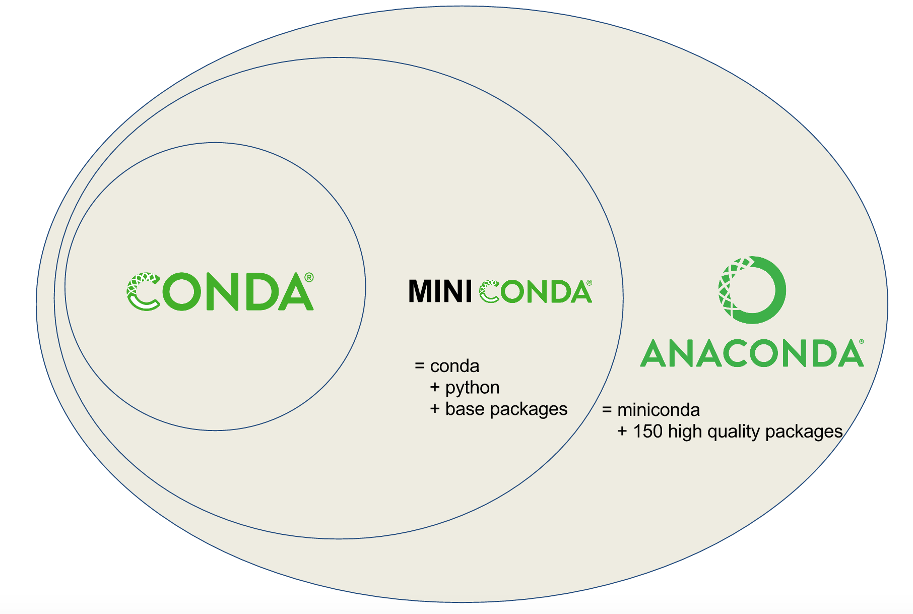

2 Linux下软件安装相关
视频课见 http://bioinfo.ke.qq.com。
软件安装的几个概念：环境变量、可执行属性、编译安装、Conda安装。
2.1 文件属性和可执行属性
2.1.1 文件属性
文件属性rwx中r表示read (数字表示为4)、w表示write (数字表示为2)、x表示执行 (数字表示为1)。三个为一组，连续出现三次(如下面命令行中所示), 第一组表示文件的所有者拥有的权限，第二组为文件所有者所在的用户组所拥有的权限，组内所有成员都具有的权限，第三组为其它用户的权限。
chmod可以修改文件或文件夹属性。
2.1.2 可执行属性
Linux下文件有一个特殊的属性即可执行属性，用来指示这个文件是一个可执行的脚本或可以运行的二进制文件。前面所提到的这些命令，都具有可执行属性。
which: 表示查看命令的路径。一般用于当我们想知道使用的命令来源于什么地方时，比如安装了多个R或多个python，但又分不清用的是哪个时，which一下，立即明了。在这儿我们用which获取的是可执行的命令所在的路径，进而查看其属性。
chmod a+x file: 表示给文件增加所有人(a)可执行权限 (+x)
chmod u+x file: 表示给文件增加所有者(u，user，)可执行权限 (+x)
chmod g+x, chmod o+X: 表示给文件增加组内人或其它人可执行权限
chmod 755 file: 表示拥有者有可读写执行权限，其它人有可读执行权限。(7=4+2+1; 5=4+1)
具体使用man chmod查看其它参数使用。
如果一个文件有了可执行权限，是不是就可以执行了，我们来检测下。
事实上并非如此，输入命令，回车后，提示命令未找打，这是为什么呢？
这就涉及到环境变量的概念，通俗的讲，环境变量就是告诉电脑 (实际是操作系统)几个目录。这几个目录下存储又可执行文件，如前面显示的/usr/bin目录，大部分的系统命令都在这个目录下。
2.2 PATH和path，傻傻分不清
习惯了Windows电脑下的所见即所得，找到程序或文件双击即可运行或打开；于是我们被惯得以为电脑会像人一样聪明，给他一个名字就可以运行程序或打开文件；于是在命令行下或程序里不断碰壁，为啥这个命令不运行了呢？
我们不能太高估电脑（或操作系统），不要以为只要输入一个程序名或文件名，电脑（或操作系统）就可以满硬盘的去找这个文件在哪；这一来效率太低了，二来重名了怎么办？比如有2个文件都叫“子房.txt”，一个存储汉初三杰之张良，一个存储被子植物生长种子的器官；可能打开前我们自己也不知道要开哪个吧。
想一下，我们在Windows下寻找文件时，是不是先打开我的电脑，然后打开D盘，打开学习目录，再打开学习计划.docx这个文件。即便我们从来没有执行过这个计划，每天我们还是不厌其烦的一层层打开然后制定新的计划。只是，我们忽略了这个一层层打开。
path我们一般指文件的路径，也就是一层层打开的过程。以Linux为例：
我们要查看一个在自己家目录下的文件 I_am_home.txt，那登录后，直接可见：
YSX@ehbio:~$ tree
.
├── I_am_home.txt
└── train
├── amplicon
│ └── pipeline_amplicon.sh
├── metagenome
│ └── pipeline_metagenome.sh
├── population_genomics
│ └── pipeline_gatk.sh
├── single_cell
│ ├── Scanpy.ipynb
│ └── Seurat.Rmd
└── transcriptome
└── pipeline_salmon.sh
YSX@ehbio:~$ head I_am_home.txt
I am home!那如果想看Seurat.Rmd，怎么查看？一步步找下去就对了。
YSX@ehbio:~$ less Seurat.Rmd
Seurat.Rmd: 没有那个文件或目录
YSX@ehbio:~$ less train/Seurat.Rmd
train/Seurat.Rmd: 没有那个文件或目录
YSX@ehbio:~$ less train/single_cell/Seurat.Rmd也可以一步步先做目录切换，然后再查看
YSX@ehbio:~$ cd train
YSX@ehbio:~/train$ cd single_cell/
YSX@ehbio:~/train/single_cell$ less Seurat.Rmd那如果你这时你想运行pipeline_metagenome.sh快速分析宏基因组数据怎么办？
YSX@ehbio:~/train/single_cell$ pipeline_metagenome.sh
-bash: pipeline_metagenome.sh: 未找到命令pipeline_metagenome.sh命令去哪儿了？上面我们都看到了，就在metagenome目录下，为啥电脑（操作系统）这么笨却找不到？另外为什么运行head就可以找到？难道有一些黑魔法在里面？
确实是有一些黑魔法的，不过我们一般称之为规则。
操作系统为了便捷性和安全性，定义了一系列环境变量，存储常用信息，PATH (注意全是大写字母)是其中一个。
PATH: 是存放有(可执行)命令和程序的目录集合；在操作系统接到用户输入的命令时，会对PATH存储的目录进行查找，看下是否有与用户输入的命令同名的文件存在，而且是从前到后一个个查找，而且是查到就停，最后查不到就报错。（从这几个加粗的文字，可以看到操作系统很懒，当然懒是好的程序员的必备属性。）
我们先看下PATH里面存了哪些目录？
YSX@ehbio:~/train/single_cell$ echo $PATH
/usr/bin:/usr/local/bin在我们前面输入head命令时，操作系统收到回车指令后，先去看下$PATH里面有哪些目录，然后从第一个/usr/bin开始寻找，很幸运，一下找到了/usr/bin/head文件，尝试运行，成功。所以在这个情况下，我们输入head等同于输入/usr/bin/head。那这个会不会给我们一些启发呢？
我们只要提供pipeline_metagenome.sh的路径就可以运行了。
# 相对路径
YSX@ehbio:~/train/single_cell$ ../metagenome/pipeline_metagenome.sh
# 绝对路径
YSX@ehbio:~/train/single_cell$ ~/train/metagenome/pipeline_metagenome.sh
# 再绝对一些
YSX@ehbio:~/train/single_cell$ /home/YSX/train/metagenome/pipeline_metagenome.sh程序可以运行了，但是不是写起来太麻烦了？既然head可以只写命令，系统就可以帮着我们去找，那么我们是否也可以把/home/YSX/train/metagenome/放到PATH里面。这就是如何去设置环境变量了。
# 加到环境变量的路径必须是全路径，全路径指以/开头或已~开头的路径
# 注意第一个PATH不含$, 第二个PATH有$符号
# 我们后面会讲什么时候用$, 什么时候不用$
# 给原变量PATH后面加一个路径（绝对路径），冒号(:)分割
YSX@ehbio:~/train/single_cell$ PATH=$PATH:/home/YSX/train/metagenome/
# 导出变量，使其对系统（Shell）可见
YSX@ehbio:~/train/single_cell$ export PATH
# 上面两句可以合并为一句，如下：
YSX@ehbio:~/train/single_cell$ export PATH=$PATH:/home/YSX/train/metagenome/
# 再次运行，可以运行了
YSX@ehbio:~/train/single_cell$ pipeline_metagenome.sh
# 看下PATH存储的目录，多了我们的新增
YSX@ehbio:~/train/single_cell$ echo $PATH
/usr/bin:/usr/local/bin:/home/YSX/train/metagenome/这样就新增一个目录到环境变量里面了，可以依次继续增加更多目录。
YSX@ehbio:~/train/single_cell$ export PATH=$PATH:/home/YSX/train/metagenome/:/home/YSX/train/amplicon/加到环境变量的路径必须是全路径，全路径指以/开头或以~或${HOME}开头的路径 (注意：~开头的路径只能个人用户有效)。
有时我们也会看的这样的写法：export PATH=my_path:$PATH，这与export PATH=$PATH:my_path有什么区别呢？
回顾下这几个关键字：从前到后，查到就停。写出官话就是：PATH中越靠前的路径优先级越高。这有什么用处呢？
比如，一般的操作系统都会有系统的python和R，通常版本比较老，我们作为普通用户也没权限修改。
那怎么办？自己装一份新的python和R，然后用自己的，这时就涉及到优先级问题了。
假如我在/home/YSX/soft/anaconda/bin下安装了一个python，那么我需要设置优先调用我自己的python，设置环境变量时，我就得把/home/YSX/soft/anaconda/bin放到前面，如export PATH=/home/YSX/soft/anaconda/bin:$PATH。如果反过来写，那么/usr/bin/python就会优先被调用了。
# which 常用工具，查看当前调用的程序的具体来源
YSX@ehbio:~/train/single_cell$ which python
/usr/bin/python
# 优先调用自己的python
YSX@ehbio:~/train/single_cell$ export PATH=/home/YSX/soft/anaconda/bin:$PATH
YSX@ehbio:~/train/single_cell$ which python
/home/YSX/soft/anaconda/bin/python环境变量学会怎么设置了，关机，下班，睡觉。
第二天早上起来，打开电脑，再运行程序
YSX@ehbio:~/train/single_cell$ which python
/usr/bin/python
YSX@ehbio:~/train/single_cell$ pipeline_metagenome.sh
-bash: pipeline_metagenome.sh: 未找到命令结果发现昨天的设置都无效了，去生信宝典群里提问 “有谁对Linux比较精通？”。半晌，无人响应，敢说自己精通的不多。提问还是不能这么问，应该怎么问，具体见：如何优雅的提问。
后来，有好心人回复“你遇到什么问题，具体描述下？”
经过半个小时的沟通，理清了，关键点：环境变量设置后失效了，怎么长期有效？
如果早这么问，估计程序都运行完了。
这时需要用到另一个规则: 登录远程服务器时，系统会自动运行~/.bash_profile里面的命令，所以把前面写的这句话export PATH=/home/YSX/soft/anaconda/bin:$PATH:/home/YSX/train/metagenome/:/home/YSX/train/amplicon/放到文件~/.bash_profile里面就好了。
文件输入后，不要忘记source ~/.bash_profile使设置生效（当然，关掉登录窗口，再次登录也可以）。
2.2.1 其它被忽略的事情
- 其它环境变量
- 环境变量PATH：定义可执行程序的目录
- LD_LIBRARY_PATH：定义动态库的目录
- PYTHONPATH：定义Python包的目录
- PERL5LIB：定义Perl模块的目录
- .bashrc和.bash_profile
- ~/.bashrc本地登录时读取 （文件若无，可新建）
- ~/.bash_profile远程登录时读取（文件若无，可新建）
- 如果想在系统层面设置环境变量，应该写到
/etc/profile.d/custom.sh里面（文件若无，可新建）。 - 设置环境变量要注意2点：1. 设置新的环境变量时一般要包含原始的环境变量，不能覆盖；2. 注意自己的目录和系统环境变量的目录的顺序，想让哪个先被找到，就先放哪个。
- 每次安装一个软件都设置一次环境变量有些麻烦，假如我们已经把
/home/ct/bin目录放在环境变量中了，以后新安装的软件，只要把可执行命令软连到/home/ct/bin目录下就好了，简单方便，即时生效 (操作可见下面NCBI-blast的安装)。
2.3 软件安装的几种传统方式
不同于windows，Linux下软件安装的方式比较多样，有些也比较复杂。每种安装方式都有自己的优点和局限，也都有可能遇到问题。在我们理解了原理之后，借助谷歌，可以更好地帮助解决问题。
2.3.1 系统包管理器安装
软件安装最方便的、一般也不容易出问题的是利用系统自带的包管理工具，可以解决大部分的依赖问题。
# centos
# 如果长时间没更新，先运行下update
yum update
# 如果不知道软件具体名字，可以先用一个关键字search一下, 选择正式的名字
# 需要注意的是一般的服务器都是64 bit，需要选x86_64版本
yum search soft_name or soft_description
yum search soft_official_name但也有一些不足，主要3点：
- 需要根用户的权限。
- 如果系统版本老，安装的软件版本也会比较老。使用新版本有时又会发生冲突。
- 生物信息学中不少软件不在系统的安装源里面。
2.3.2 下载二进制文件
解决这些问题，就需要自己去软件官网查找最新的分法包，又有两种可能，一种是分发包直接就是编译好的软件，下载下来设置下可执行属性并放入环境变量就可以运行了，如于blast或bowtie这样的工具。
blast的链接为ftp://ftp.ncbi.nlm.nih.gov/blast/executables/blast+/LATEST/ncbi-blast-2.7.1+-x64-linux.tar.gz。
另一种则是需要从源码编译安装，下面主要讲解下这个。
2.3.3 源码编译安装
源码编译经典的三部曲configure, make, make install。如果不出问题，一步步执行下来就安装好了，也不一定要知其所以然。但出了问题，就不是比较容易解决的。如果知道这背后的机制，还是会有帮助的。
configure是检查系统的库文件、类文件、依赖软件是否存在以及它们的版本是否满足需求，并根据实际检测结果生成Makefile的工具。一般是一堆bash命令的组合。通常也需要在这一步配置一些参数。最常用的就是指定软件的安装目录--prefix=/home/ct/soft/specific_name。make则是具体的编译过程。编译的语句都写在了Makefile中。make默认编译Makefile中出现的第一个target，也可以指定target编译，并根据Makefile的设置方式依次编译所有依赖的东西。
有些软件的安装，在执行完make后就获得了可执行程序，可以跳过make install的过程，只需要把可执行程序放入环境变量就可以运行了。但部分软件还需要一些依赖关系，所以需要执行make install才算完成了完整的安装。
make install通常是拷贝make编译出来的可执行文件或者依赖的库文件(如果有的话)到configure时的--prefix指定的目录下。安装好的软件放入环境变量, 就可以快乐的运行了。
两条注意:
从源码编译最难解决的问题就是依赖的库文件、头文件、其它软件的缺失或版本不匹配，没有统一的解决办法，原则就是
缺啥补啥。三部曲每一步的执行，屏幕上都会输出比较多的信息，一定仔细看最后有没有
ERROR类的字样，对判断软件有无安装成功和下一步要怎么做会很有帮助。
举一个例子，编译安装samtools。具体看视频解释http://bioinfo.ke.qq.com。
小练习： 尝试源码安装EMBOSS, 下载地址 ftp://emboss.open-bio.org/pub/EMBOSS/emboss-latest.tar.gz.
EMBOSS是欧洲分子生物学开放软件包，主要做序列比对，数据库搜搜，蛋白motif分析和功能域分析，序列模式搜索，引物设计等。
| Popular.applications | Functions |
|---|---|
| prophet | Gapped alignment for profiles. |
| infoseq | Displays some simple information about sequences. |
| water | Smith-Waterman local alignment. |
| pepstats | Protein statistics. |
| showfeat | Show features of a sequence. |
| palindrome | Looks for inverted repeats in a nucleotide sequence. |
| eprimer3 | Picks PCR primers and hybridization oligos. |
| profit | Scan a sequence or database with a matrix or profile. |
| extractseq | Extract regions from a sequence. |
| marscan | Finds MAR/SAR sites in nucleic sequences. |
| tfscan | Scans DNA sequences for transcription factors. |
| patmatmotifs | Compares a protein sequence to the PROSITE motif database. |
| showdb | Displays information on the currently available databases. |
| wossname | Finds programs by keywords in their one-line documentation. |
| abiview | Reads ABI file and display the trace. |
| tranalign | Align nucleic coding regions given the aligned proteins. |
2.3.4 Python包的安装
在没有Anaconda(或其前身canopy)出现之前，Python包以其管理混乱、安装困难著称。有了Anaconda后，不只python包的安装简单了，其它软件的安装也都方便了 (详见后面Anaconda的两个福利)。
- 首先下载Anaconda的安装包 https://www.continuum.io/downloads。
- Anaconda的安装包做的很人性化，一个bash脚本，只要运行
bash Anacond*x86_64.sh，然后按照提示操作就可以了。 - 安装好后，设置或刷新下环境变量就可以使用了。
- 此后再安装python的包只需要执行
pip install pakcage_name或conda install pakckage_name就可以了。 - 这里唯一需要注意的就是确认使用的
python或pip确实是Anaconda安装的python或pip。which python查看使用的python命令。- 如果使用的还是系统默认的python，则需要检查下环境变量的设置，尤其前面提到的环境变量里面不同目录放置的顺序。
2.3.5 Anaconda的两个福利
- 头文件和库文件库
这是Anaconda安装后的目录结构
bin envs Examples imports lib LICENSE.txt pkgs share var
conda-meta etc gcc include lib64 mkspecsplugins ssl其中lib目录下，一部分是依赖的动态链接库, .so文件；这也是在源码编译时最常见的拦路虎。通常，只需要把这个目录放入环境变量LD_LIBRARY_PATH里面比如export LD_LIBARY_PATH=${LD_LIBARY_PATH}:anaconda_path/lib就可以解决问题。
cairo libitm.a libQtScript.so.4
cmake libitm.la libQtScript.so.4.8
engines libitm.so libQtScript.so.4.8.7
gcc libitm.so.1 libQtScriptTools.la
gcj-4.8.5-14 libitm.so.1.0.0 libQtScriptTools.prl
glib-2.0 libitm.spec libQtScriptTools.so
libargtable2.a libjpeg.a libQtScriptTools.so.4
libargtable2.la libjpeg.la libQtScriptTools.so.4.8
libargtable2.so libjpeg.so libQtScriptTools.so.4.8.7
libargtable2.so.0 libjpeg.so.8 libQtSql.la
libargtable2.so.0.1.8 libjpeg.so.8.4.0 libQtSql.prl
libasan.a libmkl_avx2.so libQtSql.so
libasan.la libmkl_avx512_mic.so libQtSql.so.4
libasan_preinit.o libmkl_avx512.so libQtSql.so.4.8
libasan.so libmkl_avx.so libQtSql.so.4.8.7- bioconda
bioconda生物分析软件安装的通道，后面专门介绍。
2.3.6 R和R包的安装
见R系列教程。
2.3.7 Perl包的安装
# 假设~/bin已在环境变量中
cd ~/bin
curl -L https://cpanmin.us/ -o cpanm
chmod +x cpanm
cpanm List::MoreUtils Bio::Perl2.4 Conda安装配置生物信息软件
Conda是一种通用包管理系统，旨在构建和管理任何语言的任何类型的软件。通常与Anaconda (集成了更多软件包，https://www.anaconda.com/products/individual)和Miniconda (只包含基本功能软件包, https://conda.io/miniconda.html)一起分发。
最初接触到Anaconda是用于Python包的安装。Anaconda囊括了100多个常用的Python包，一键式安装，解决Python包安装的痛苦。但后来发现，其还有更多的功能，尤其是其增加了bionconda (https://bioconda.github.io/index.html)通道后，生物信息分析的7925多个软件都可以一键安装了 (具体列表在：https://anaconda.org/bioconda/repo)，免去了编译时间浪费和解决库文件安装的问题。另外其最有吸引力的是它的虚拟软件环境概念，可以简单的配置不同Python版本的环境、不同Python包的环境、不同R环境和R包的环境，对于生物信息软件繁杂的应用和频繁的更新提供了很大的便利。

2.4.1 Conda安装和配置
在链接https://www.anaconda.com/products/individual下载Anaconda或Miniconda对应版本的分发包之后，安装就是运行下面的命令，根据提示一步步操作，主要是修改安装路径 (如果是根用户，可以安装到/anaconda下，其它任意目录都可以，但路径短还是有好处的；普通用户安装到自己有权限的目录下，如~/miniconda2)。
# soft目录为conda安装的目录，可自己修改
soft=~/miniconda2
echo 'export PATH="'${soft}'/bin:$PATH"' >>~/.bash_profile
export PATH="${soft}/bin:$PATH"
wget -c https://repo.anaconda.com/miniconda/Miniconda3-latest-Linux-x86_64.sh
bash Miniconda2-latest-Linux-x86_64.sh -b -f -p ${soft}安装完成之后，记得把安装路径下的bin文件夹加入到环境变量中 (上面命令中我们已经帮您加进去了)。
2.4.2 Conda基本使用
在Conda安装配置好之后，就可以使用了。
conda list # 列出安装的软件包
# conda所有软件名都是小写
conda search <package ambigious name> # 搜索需要安装的软件包，获取其完成名字以搜索numpy为例：
conda search numpy # * 表示对于版本的包已安装Fetching package metadata ...............
numpy 1.7.2 py27_blas_openblas_201 conda-forge [blas_openblas]
1.7.2 py27_blas_openblas_202 conda-forge [blas_openblas]
1.12.0 py36_0 defaults
1.12.0 py36_nomkl_0 defaults [nomkl]
* 1.12.1 py27_0 defaults
1.12.1 py27_nomkl_0 defaults [nomkl]
1.13.1 py36_0 defaults
1.13.1 py36_nomkl_0 defaults [nomkl]
numpy-indexed 0.3.2 py27_0 conda-forge
1.0.47 py35_0 conda-forge
1.0.47 py36_0 conda-forge
numpy_groupies 0.9.6 py27_0 conda-forge
0.9.6 py35_0 conda-forge
0.9.6 py36_0 conda-forge
numpy_sugar 1.0.6 py27_0 conda-forge
1.0.6 py34_0 conda-forge
numpydoc 0.6.0 py27_0 conda-forge
0.6.0 py34_0 conda-forge
xnumpy 0.0.1 py27_0 conda-forge 安装包
conda install <package name> # 安装软件包
# -y是同意安装，不写的话会弹出提示，需要再次确认
conda install numpy=1.7.2 -y # 安装特定版本的软件包
conda remove <package name> # 移除软件包安装R
# 具体见下面
# 安装R,及80多个常用的数据分析包, 包括idplyr, shiny, ggplot2, tidyr, caret 和 nnet
conda install -c r r-base=4.0.2 r-essentials
# 安装单个包
# conda install -c https://conda.binstar.org/bokeh ggplot 更新包
# 更新基础conda，新版本conda使用起来更快
conda update -n base -c defaults conda
conda update r-base获取帮助信息
conda -h # 查看conda可用的命令
conda install -h #查看install子命令的帮助只是这些命令就可以省去不少安装的麻烦了，但是如果软件没搜索到呢？
2.4.3 Conda的channel
Conda默认的源访问速度有些慢，可以增加国内的源；另外还可以增加几个源，以便于安装更多的软件，尤其是bioconda安装生信类工具。conda-forge通道是Conda社区维护的包含很多不在默认通道里面的通用型软件。r通道是向后兼容性通道，尤其是使用R3.3.1版本时会用到，现在则不需要单独添加了。后加的通道优先级更高，因此一般用下面列出的顺序添加。清华镜像具体见https://mirrors.tuna.tsinghua.edu.cn/help/anaconda/ (有时清华镜像也不稳定，不稳定时直接用官方镜像，早上下载速度还是好的)。
conda config --add channels r # Optional # Lowest priority
conda config --add channels defaults
conda config --add channels conda-forge
conda config --add channels bioconda
conda config --add channels https://mirrors.tuna.tsinghua.edu.cn/anaconda/cloud/msys2/
# Anocanda清华镜像
conda config --add channels https://mirrors.tuna.tsinghua.edu.cn/anaconda/pkgs/free/
conda config --add channels https://mirrors.tuna.tsinghua.edu.cn/anaconda/pkgs/main/
conda config --add channels https://mirrors.tuna.tsinghua.edu.cn/anaconda/cloud/cond-forge
# 清华通道, 最高优先级
conda config --add channels https://mirrors.tuna.tsinghua.edu.cn/anaconda/cloud/bioconda/
conda config --set show_channel_urls yes注意通道的顺序是会影响solving environment和软件包下载的速度的。
# 显示已有的通道
conda config --get channelsconda通道的配置文件一般在~/.condarc里面，内容如下。全局控制conda的安装在conda_path/.condarc，具体操作见https://conda.io/docs/user-guide/configuration/admin-multi-user-install.html。
channels:
- https://mirrors.tuna.tsinghua.edu.cn/anaconda/cloud/bioconda/
- https://mirrors.tuna.tsinghua.edu.cn/anaconda/cloud/cond-forge
- https://mirrors.tuna.tsinghua.edu.cn/anaconda/pkgs/main/
- https://mirrors.tuna.tsinghua.edu.cn/anaconda/pkgs/free/ # Anocanda清华镜像
- https://mirrors.tuna.tsinghua.edu.cn/anaconda/cloud/msys2/
- bioconda
- conda-forge
- r2.4.4 创建不同的软件运行环境
这是Conda最有特色的地方，可以通过创建不同的环境，同时运行不同软件的多个版本。
新创建的软件环境的目录为anaconda_path/envs/enrironment_name，具体见下面的3个例子。
- 创建一个环境
transcriptome安装常用转录组分析软件
# 新建一个环境，命名为transcriptome
# 环境名字为 transcriptome
# 环境中安装 samtools multiqc rseqc
conda create -n transcriptome samtools multiqc rseqc
# 如果还想继续安装
conda install -n transcriptome fastqc salmon star stringtie sra-tools trimmomatic rmats rmats2sashimiplot
# 启动新环境
source activate transcriptome
salmon -h
# 默认安装到了anaconda_path下面的envs/transcriptome目录下（在屏幕输出也会有显示）
# 这个目录下存在bin文件夹，一般使用全路径就可以调用，如下
# anaconda_path/envs/transcriptome/bin/salmon -h # 但有时会因为依赖关系而失败
source deactivate transcriptome不少软件不激活环境也可以使用全路径调用，比如anaconda_path/envs/transcriptome/bin/salmon就可以直接使用salmon程序，这样我们就可以根据前面的PATH介绍，把目录anaconda_path/envs/transcriptome/bin/放入环境变量，就可以直接调用这个环境中的大部分程序了。
新版的conda默认会使用conda activate transcriptome激活环境。
初次使用时会弹出一个提示，需要运行conda init：
conda activate qiime2-2020.6
CommandNotFoundError: Your shell has not been properly configured to use 'conda activate'.
To initialize your shell, run
$ conda init <SHELL_NAME>
Currently supported shells are:
- bash
- fish
- tcsh
- xonsh
- zsh
- powershell
See 'conda init --help' for more information and options.
IMPORTANT: You may need to close and restart your shell after running 'conda init'.不过，个人更喜欢用source anaconda_path/bin/activate transcriptome激活环境，用起来更灵活一些。而且如果是根用户安装时，不建议把conda环境默认加到环境变量中，会引起不必要的系统冲突。可以给个用户自己使用是自己配置对应的环境变量。
激活环境后，会看到命令行提示前多了一个环境名字，比如下面激活qiime2-2020.6环境后的展示。
ct@ehbio:~# source /anaconda3/bin/activate qiime2-2020.6
(qiime2-2020.6) ct@ehbio:~# which python
/anaconda3/envs/qiime2-2020.6/bin/python
(qiime2-2020.6) ct@ehbio:~# source /anaconda3/bin/deactivate
DeprecationWarning: 'source deactivate' is deprecated. Use 'conda deactivate'.
ct@ehbio:~# which python
/usr/bin/python- 在环境
phylo中安装ete3
起因是使用官方的推荐命令安装时出了问题，py3.5的包装到了py2.7环境下。解决办法，新建一个py2.7的环境，然后安装。
# 新建一个环境，命名为phylo，指定其内安装的python版本为2.7
conda create -n phylo python=2.7
# 在phylo环境中安装 ete3
# ete3存在于2个通道中，官方推荐使用自己的通道，但没有成功
# -n 指定安装环境 -c 指定下载通道
# conda install -n phylo -c etetoolkit ete3 ete3_external_apps
# bioconda通道里面也有ete3, 下面的安装未指定具体通道，
# 将在前面设定的几个通道里面按先后顺序查找安装
conda install -n phylo ete3 ete3_external_apps
# 默认安装到了anaconda_path下面的envs/phylo目录下（在屏幕输出也会有显示）
# 这个目录下存在bin文件夹，一般使用全路径就可以调用，如下
# anaconda_path/envs/phylo/bin/ete3 -h # 但有时会因为依赖关系而失败
# 所以激活本次安装环境是比较不容易出问题的使用方式
source activate phylo
# 在新环境里面执行命令操作
ete3 -h
# 其它操作
# 退出新环境
source deactivate phylo- 创建R环境 Reference1
# Create a new conda environment called r,并且在里面安装anaconda
conda create -n r anaconda
# Switch to r environment
source activate r
# 在新环境里面安装R Installs R
conda install -c r r
# Install R kernel for IPython notebook
conda install -c r r-irkernel
# Install ggplot
conda install -c https://conda.binstar.org/bokeh ggplot
# 最后退出新环境
source deactivate r列出所有的环境
conda env list
# conda environments:
#
/anaconda2
/anaconda2/envs/lefse
/anaconda2/envs/metagenome_env
/anaconda2/envs/metawrap
/anaconda2/envs/prokka_env
/anaconda2/envs/py3
/anaconda2/envs/r-environment
/anaconda2/envs/reseq
/anaconda2/envs/sourmash_env
/anaconda3/envs/qiime2-2020.62.4.5 移除某个conda环境
如果环境不需要了，或出了错，则可以移除。比如需要移除phylo环境，执行conda remove -n phylo --all。
2.4.6 Conda配置R
在添加了不同的源之后，有些源更新快，有些更新慢，经常会碰到版本不一的问题。而且软件版本的优先级，低于源的优先级。保险期间，先做下搜索，获得合适的版本号，然后再选择安装。
conda search r-essentials
r-essentials 1.0 r3.2.1_0 r
1.0 r3.2.1_0a r
1.1 r3.2.1_0 r
1.1 r3.2.2_0 r
1.1 r3.2.1_0a r
1.1 r3.2.2_0a r
1.1 r3.2.2_1 r
1.1 r3.2.2_1a r
1.4 0 r
1.4.1 r3.3.1_0 r
1.4.2 0 r
1.4.2 r3.3.1_0 r
1.4.3 r3.3.1_0 r
1.5.0 0 r
1.5.1 0 r
1.5.2 r3.3.2_0 r
1.5.2 r3.4.1_0 r
1.6.0 r3.4.1_0 r
1.0 r3.2.1_0 defaults
1.0 r3.2.1_0a defaults
1.1 r3.2.1_0 defaults
1.1 r3.2.2_0 defaults
1.1 r3.2.1_0a defaults
1.1 r3.2.2_0a defaults
1.1 r3.2.2_1 defaults
1.1 r3.2.2_1a defaults
1.4 0 defaults
1.4.1 r3.3.1_0 defaults
1.4.2 0 defaults
1.4.2 r3.3.1_0 defaults
1.4.3 r3.3.1_0 defaults
1.5.0 0 defaults
1.5.1 0 defaults
1.5.2 r3.3.2_0 defaults
1.5.2 r3.4.1_0 defaults
1.6.0 r3.4.1_0 defaults
1.5.2 r3.3.2_0 conda-forge
1.5.2 r3.3.2_0 https://mirrors.tuna.tsinghua.edu.cn/anaconda/cloud/conda-forge
从上面可以看到清华的源版本同步于conda-forge, 都比较老，还是指定r通道安装。
conda install -c r -n r r-essentials=1.6.0R会安装于conda_path/envs/r/bin中，软链到位于环境变量的目录中即可正常使用。这就是环境变量的活学活用。
2.4.7 Conda环境简化运行
为了方便不同环境里面程序的运行，我写了一个shell脚本 (conda_env_run.sh)，具体运行如下：
# -c: 表示实际需要运行的命令
# -e: 表示需要启动的软件环境，也就是上面conda create建立的环境
# -b：一般不需要指定，如果conda没在环境变量中需要给出conda的安装路径
conda_env_run.sh -c 'ete3 -h mod' -e phylo
conda_env_run.sh -c 'bwa mem -h' -e aligner -b "/usr/local/anaconda2/bin"conda_env_run.sh内容如下
2.4.8 Conda环境备份
有的时候会出现装一个新包，装着装着就把当前环境搞装崩了的情况，所以备份一个环境还是必要的，conda create -n python35copy --clone python35，把python35备份为python35copy。
2.4.9 Conda环境导出和导入
做培训时需要给参加培训的老师提供配置环境的脚本，之前都是提供一个Bash文件全部运行下来就可以完成整个环境的配置，更简单的方式是可以导出环境，自己配置时再导入就好了。
# 假设我们有一个环境叫 ehbio，可以导出为一个yml文件
conda env export --file ehbio_env.yml --name ehbio
# 然后换一台电脑，就可以完全重现这个环境了
# 这么做的另一个优势是yml中明确列出了软件的版本，
# 使用 conda solving environment时速度会快很多
conda env create -f ehbio_env.yml2.4.10 Conda软件安装 core dump error/Segment fault/段错误 怎么办
# 清空缓存
# https://github.com/conda/conda/issues/7815
conda clean -a2.4.11 Conda为什么越来越慢？
Conda中包含的软件越来越多，而且软件的不同版本都保留了下来，软件的索引文件越来越大，安装一个新软件时搜索满足环境中所有软件依赖的软件的搜索空间也会越来越大，导致solving environment越来越慢。
2.4.12 Conda是如何工作的
从设定的通道 (
channel)处下载通道中所有软件的索引信息 (repodata.json) (Collecting package metadata (repodata.json))"packages" : { "moto-1.3.7-py_0.tar.bz2" : { "build" : "py_0", "build_number" : 0, "depends" : [ "aws-xray-sdk !=0.96,>=0.93", "backports.tempfile", "boto >=2.36.0", "boto3 >=1.6.15", "botocore >=1.12.13", "cookies", "dicttoxml", "docker-py", "flask", "jinja2 >=2.7.3", "jsondiff 1.1.1.*", "mock", "pyaml", "python", "python-dateutil", "python-jose <3.0.0", "pytz", "requests >=2.5", "responses >=0.9.0", "six", "werkzeug", "xmltodict" ], "license" : "Apache-2.0", "md5" : "17b424658cd07e678b5feebdc932eb52", "name" : "moto", "sha256" : "5924666f8c1758472dc4c3d22b270b46cd1c4b66c50a9ba50d5c636d2237bdd1", "size" : 399973, "subdir" : "noarch", "timestamp" : 1552438392680, "version" : "1.3.7" } }解析
repodata中的信息获取所有依赖的包的信息采用
SAT-solver算法决定需要下载包的哪个版本和它们的安装顺序下载并安装包
2.4.13 Conda哪一步慢？
主要是第3步，确定待安装包的依赖包之间的兼容和已安装软件之间的兼容，获得需要下载的包和对应版本。
2.4.14 如何提速Conda
采用最新版的
conda(Conda4.7相比Conda4.6提速3.5倍, Conda 4.8应该不会比4.7慢)安装时指定版本减少搜索空间
conda install python=3.7.4安装R包时指定R的版本也会极大减小搜索空间 (R包因其数目众多，也是生物类软件依赖解析较慢的原因之一)
conda install r-base=4.0.2 r-ggplot2=3.3.2采用
mamba加速软件依赖解析 [mamba采用c++重写了部分解析过程，这个提速效果是很明显的] (安装好mamba后就可以用mamba替换conda进行安装了)conda install mamba -c conda-forge mamba install python=3.7.4，默认conda解析软件依赖时优先考虑允许的最高版本，设置通道优先级权限高于软件版本新旧后，conda会能更快的解决依赖关系，避免
defaults和conda-forge通道的奇怪组合导致软件依赖解析迟迟不能将结束的问题:conda config --set channel_priority strict(这个命令只需要运行一次)。创建一个新环境 (
conda env create -n env_name)再安装软件，这样就不用考虑与已有的软件的兼容问题了，也可以大大降低搜索空间和提高解析软件依赖的速度。如果安装的软件提供了
environment.yaml那么用起来，文件中对应的软件版本都很明确，解析依赖关系时更快。也可以按前面提供的方式导出一个已经配置好的环境的yaml文件，在其它电脑配置时直接读取。 (具体导出方式见Bioconda软件安装神器：多版本并存、环境复制、环境导出。channels: - qiime2/label/r2020.6 - conda-forge - bioconda - defaults dependencies: - _libgcc_mutex=0.1 - _openmp_mutex=4.5 - _r-mutex=1.0.1 - alsa-lib=1.1.5 - arb-bio-tools=6.0.6 - attrs=19.3.0 - backcall=0.2.0 - bibtexparser=1.1.0 - binutils_impl_linux-64=2.34 - binutils_linux-64=2.34 - bioconductor-biobase=2.42.0 - bioconductor-biocgenerics=0.28.0 - bioconductor-biocparallel=1.16.6 - bioconductor-biostrings=2.50.2 - bioconductor-dada2=1.10.0添加Bioconda通道时，注意顺序，给予
conda-forge最高优先级，其次是bioconda。如果之前已经添加好了通道，自己在~/.condarc中调整顺序。~~~~~~~~~~~~~~~~~~~~~~~ conda config –add channels defaults conda config –add channels bioconda conda config –add channels conda-forge ~~~~~~~~~~~~~~~~~~~~~
综合以上组合，之前尝试多次都没安装好的工具，直接搞定。
2.4.15 下载提速
换个网或从朋友处拷贝已经下载好的压缩包一般在
anaconda_root_dir/pkgs下，拷贝放在自己的anaconda3/pkgs下面，再次下载时系统会识别已经下载好的包而跳过 (并不总是有效)。获取所有相关包的名字，从朋友处拷贝下载好的安装包，自己手动安装。
mamba install r-base=4.0.2 r-ggplot2=3.3.2 --dry-run >package_solving_result # _anaconda_depends pkgs/main/linux-64::_anaconda_depends-2020.07-py37_0 # _r-mutex conda-forge/noarch::_r-mutex-1.0.1-anacondar_1 # binutils_impl_lin~ pkgs/main/linux-64::binutils_impl_linux-64-2.33.1-he6710b0_7 # binutils_linux-64 conda-forge/linux-64::binutils_linux-64-2.33.1-h9595d00_17 # brotlipy conda-forge/linux-64::brotlipy-0.7.0-py37h516909a_1000 # bwidget conda-forge/linux-64::bwidget-1.9.14-0 # gcc_impl_linux-64 pkgs/main/linux-64::gcc_impl_linux-64-7.3.0-habb00fd_1 # gcc_linux-64 conda-forge/linux-64::gcc_linux-64-7.3.0-h553295d_17 # 获取所有包的名字 grep '::' a | sed 's/.*:://' | sed 's/$/.tar.bz2/' # 手动安装 for i in `grep '::' a | sed 's/.*:://' | sed 's/$/.tar.bz2/'`; do conda install --offline /anaconda3/pkgs/$i; done如果拷贝过来未能自动识别，可手动安装
conda install --offline local_path。
2.4.16 使用conda-pack直接从已经安装好的地方拷贝一份 (同一操作系统)
安装conda-pack
conda install -c conda-forge conda-pack
# pip install git+https://github.com/conda/conda-pack.git打包已经安装好的环境
conda pack -n my_env_name -o my_env_name.tar.gz拷贝打包好的环境my_env_name.tar.gz到目标机器，并解压到任何目录，一般推荐放到envs目录下 (anaconda_root/envs)。(注意：anaconda_root改为自己的conda安装路径。)
# 解压打包好的环境
# 默认是全都解压到当前目录，场面很壮观
# -C 一定要指定
mkdir -p anaconda_root/envs/my_env
tar -xzf my_env.tar.gz -C anaconda_root/envs/my_env
# 激活环境
source my_env/bin/activate
# Unpack
conda-unpack
# 至此环境就完全拷贝过来了
# 去激活
source deactivate2.5 Docker安装
2.5.1 Docker能做什么
The key benefit of Docker is that it allows users to package an application with all of its dependencies into a standardized unit for software development.
提供一个虚拟的操作平台，供我们安装依赖不同版本系统的工具软件。
提供一个即时可用的应用软件或者流程的镜像，开发者把软件部署到系统镜像中， 使用者可以直接下载下来使用，省去了个人安装软件的烦恼。
提供一个系统资源分配手段，给不同用户的程序分配独立的计算资源。
2.5.2 Docker的几个基本概念
镜像 (Images): 可以认为是超级轻量级的虚拟机的快照。 镜像会有自己的唯一ID，名字和标签，比如
ubuntu:latest,django:1.6等。 通常都是在已有的镜像（多数是Linux操作系统的镜像）的基础上构建自己的 具有新功能的镜像。容器 (Containers): 可以认为是超级轻量级的虚拟机， 是镜像运行起来所处的可读写的状态。 容器里面可以安装、运行程序，还可以把安装好的程序存储起来获得新的镜像。
与虚拟机很大的不同在于，一个容器通常只运行一个程序。在Docker中， 应用程序和数据文件是分开的，因此可以在不影响数据的情况下快速升级代码 或系统。
数据卷 (Volumes): 永久保存数据的磁盘空间。 Docker允许用户定义哪一部分是应用程序，哪一步分是数据，并且把他们分隔开。 这就保证了在Docker中容器的生命周期是短暂的，而数据的存储是永恒的。
数据卷存储在运行Docker的宿主机上，对每个容器来说是特有的。 我们可以启动同一个镜像来产生多个容器，并且分别给他们分配一个数据卷。
数据卷也可用于在不同的容器间共享数据。 具体参见http://blog.genesino.com//2016/09/docker-lamp/
联通 (Links): 容器启动后会分配有一个私有IP，其它容器可以通过这个IP地 址与这个容器通讯。
假如有个正在运行的数据库容器 (dbapp)， 那么我们可以在网络服务器容器 (webserver)中通过指定端口连接dbapp与数据库容器通讯。
2.5.3 安装和配置
Centos 6.5 安装Docker
其他新版操作系统的安装可以直接使用系统自带的
yum或apt工具， 启动和配置如上。
2.5.4 Docker用户权限
默认情况下，Docker命令的运行需要根用户权限。一个解决办法是把用户加入
docker用户组，原因是Docker能够将/run/docker.socket的文件权限设为
660、用户组设为docker。当把用户加入到docker用户组后，就无需使用
sudo或su命令切换获取根用户权限。check here
但通常只应把信任的用户加入docker用户组因为docker用户组的权限相当于root。
如果打算只允许用户访问一个特定的容器，可以写一个简单脚本
脚本完成后，配置sudoers
2.5.5 Docker试用
查看本地Docker的信息
docker info运行Docker需要有一个镜像和容器。镜像是容器的只读版本， 最基础的镜像是一个操作系统，是运行其他命令的基础。 因此我们需要先获取一个操作系统镜像，通常使用Ubuntu系统, CentOS系统和 Alpine (只有5M)。 我们也可以根据所要运行软件的需要，来获取不同的操作系统， 方便软件的安装。
搜索镜像
docker search ubuntu; 镜像的名字通常由用户名/镜像名构成, 无用户名的为官方认证镜像。获取镜像
docker pull ubuntu获取镜像的最新版本(不指定版本号即为latest)docker pull ubuntu:14.04获取指定版本的镜像；14.04为镜像的版本号(又称TAG)。
查看本机Docker中存在的镜像
docker images
REPOSITORY TAG IMAGE ID CREATED VIRTUAL SIZE
ubuntu latest 37b164bb431e 4 days ago 126.6 MB获得了镜像之后，我们需要运行镜像；运行起来的镜像就是容器，是可读写的。 我们可以在容器中安装软件、运行命令，就如在正常的操作系统中一样。
在容器中运行单个命令或程序, 通常加
--rm参数，容器运行结束之后就自动 删除。如果我们想保留容器的修改，则不能加--rm参数。交互式运行容器
docker run -it ubuntu, 这时可以发现终端的用户名变了docker run --help可以查看这个命令的参数。在容器中部署软件，安装
build-essential和r-base; build-essential 是编译软件包的基础，提供需要的编译器、头文件和库文件。 r-base 是编译R语言程序包的基础。这一步我们可以安装任意的软件，测试时可以选择小一点的软件包。 最开始时选择了安装
build-essential, 只是为了学习， 到后来发现安装这个并没有什么用，也不方便测试。为了简单起见， 可以尝试安装Apache。在本文后面有个简单的测试Apache安装的例子。运行
docker commit -m 'Add build-essential r-base' -a ct5869 8aca49b869be ct5869/ubuntu-dev:v1''。测试运行新的镜像
docker run --rm -it username/ubuntu-dev:v1。挂载宿主机硬盘在容器内部操作, 通过
-v参数，路径都为绝对路径，docker run --rm -v /host_absolute_dir:/container_absolute_dir username/ubuntu-dev:v1 echo 'test' >/container_absolute_dir/test_file这样，就相当于把host机目录/host_absolute_dir链接为docker容器路径/container_absolute_dir。如果只是自己用，到现在就可以结束了，我们可以在镜像里面继续更多的操作了。
另外我们还可以运用
导出和导入来迁移镜像- 导出镜像：
docker export image_id >ubuntu-dev.v1.tar - 导入镜像：
cat ubuntu-dev.v1.tar | docker import - username/ubuntu-dev:v1
- 导出镜像：
如果我们想把镜像分发给别人使用，就需要把镜像传到镜像仓库比如Docker Hub。 我们需要现在Docker hub注册， 用注册的用户名替换掉前文提到的
username。注册成功之后，在本地服务器尝试登录，用以把登录信息存储在本地，方便后续使用。 运行
docker login，按提示输入用户名、密码和邮件。登录成功会返回Login Succeeded.运行
docker push username/ubuntu-dev:v1把准备好的镜像上传； 等待片刻，完成上传。这时就可以再Docker hub上看到上传的镜像了。其它用户可以使用
docker pull username/ubuntu-dev:v1来获取安装好编 译环境的ubuntu系统了。
2.5.6 Docker系统基本操作
当一个容器不再使用时，运行
docker rm container_id移除容器，以节省空间。 这不会对镜像造成影响。当一个容器不再使用时，运行
docker rm -v container_id移除容器及其挂载卷， 以节省空间。这不会对镜像造成影响。批量删除退出的容器
docker rm -v $(docker ps -a -q -f status=exited)。对于只需要单次运行的容器，比如执行一个命令等，则只需要在
docker run时添加--rm参数就好。这样容器运行结束后会自动删除。运行
docker rmi username/ubuntu-dev:v1移除镜像。运行
docker tag 26d99f722dca username/ubuntu-dev:v0修改镜像的名字。运行
docker run -d --name=container_name username/ubuntu-dev:v1指定运行的container的名字。运行
docker run --rm -ti -v /host_abs_dir:/container_abs_dir:ro username/ubuntu-dev:v1挂载只读目录。运行
docker stop containde_id/container_name停止镜像。运行
docker rm $(docker ps -a -q)和docker rmi $(docker images -q)移除全部镜像。BE CAREFULL查看Docker镜像的创建历史
docker history image_name
IMAGE CREATED CREATED BY SIZE COMMENT
3d4f934accdb 7 months ago /bin/sh -c #(nop) CMD ["/run.sh" ] 0 B
aa321fa8d23f 7 months ago /bin/sh -c #(nop) EXPOSE 3306/tcp 80/tcp 0 B
6446fbfc507d 7 months ago /bin/sh -c #(nop) VOLUME [/etc/mysql /var/lib 0 B
44e98bdf2bbf 7 months ago /bin/sh -c #(nop) ENV PHP_POST_MAX_SIZE=10M 0 B
bedff16caee9 7 months ago /bin/sh -c #(nop) ENV PHP_UPLOAD_MAX_FILESIZE 0 B
72b723ccc97f 7 months ago /bin/sh -c mkdir -p /app && rm -fr /var/www/h 0 B查看镜像的JSON文件
docker inspect image_nameDocker images的安装路径为
/var/lib/docker。/var/lib/docker/{driver-name}will contain the driver specific storage for contents of the images./var/lib/docker/graph/<id>now only contains metadata about the image, in the json and layersize files.
查看Docker 容器启动和运行日志
docker logs --tail=all container_id2.5.7 使用Dockerfile自动构建镜像
除了可以像上面那样一步步地获取镜像、修改容器、存储镜像、上传镜像等操作外， 我们还可以使用Dockerfile自动实现上述操作。
典型的Dockerfile如下所示，
FROM alpine
MAINTAINER username username@internet.com
RUN apk add --no-cache apache2 apache2-utils
COPY public_html /var/www/html
EXPOSE 80 443
CMD ["rc-service apache2 start"]FROM为除注释之外的第一条命令，用来声明镜像的基础系统。MAINTAINER设置镜像维护人的信息。RUN在容器内部运行shell命令。COPY是把本地的bash配置文件拷贝到新维护的镜像中； COPY的文件的路径是相对于docker build的PATH，一般是当前路径；CMD指定容易运行时默认执行的命令，如出现多个，只有最后一个会被运行。
运行命令docker build -t="username/httpd-alpine:v1" .就可以构建镜像了。
最后的.表示Dockerfile在当前目录，也可指定其他目录。public_html必须
与Dockerfile在同一目录。
2.5.8 Docker的特征
- Docker will watch only one single process. If you need multiple processes, you need to add a monitor like Monit or Supervisor at the top-level to take care of the others. But this is not recommended.
2.5.9 Docker使用注意
避免安装不必要的软件包。
每个容器都只运行一个进程。
最小化层：每执行一个命令，都会产生一个层。
2.6 Makefile知识
Makefile通常的格式和布局如下，有兴趣的可以自己去学，或者我们再出一个教程。
# 假设当前文件夹下Makefile文件中内容如下
ct@ehbio:~$ cat Makefile
# first: target名字
# echo "compile first": target对应的命令，任何Linux命令都可以
first:
echo "compile first"
all: first second
echo "compile all"
second:
echo "compile second"
# 直接运行make，会make第一个出现的target
ct@ehbio:~$ make
echo "compile first"
compile first
# make first与直接make相同，因为它出现在第一个
ct@ehbio:~$ make first
echo "compile first"
compile first
# all依赖于first, second，因此make all会先执行make first, make second
# 然后才是自己所代表的命令
ct@ehbio:~$ make all
echo "compile first"
compile first
echo "compile second"
compile second
echo "compile all"
compile all2.6.1 参考
Start (english version) https://scotch.io/tutorials/getting-started-with-docker
Start (english version) https://prakhar.me/docker-curriculum/
Greate english version https://blog.talpor.com/2015/01/docker-beginners-tutorial/
Docker trick https://blog.docker.com/2014/06/why-you-dont-need-to-run-sshd-in-docker/
Docker root and non-root http://www.2cto.com/os/201508/432930.html
2.7 References
- https://samrelton.wordpress.com/2015/07/02/rconda/
- https://www.anaconda.com/blog/developer-blog/anaconda-r-users-sparkr-and-rbokeh/
- http://www.bioinfo-scrounger.com/archives/209
- 清华大学开源镜像站
- Linux学习 - 又双叒叕一个软件安装方法
- Linux - 命令运行监测和软件安装
- Linux - 应用Docker安装软件
- Linux - Conda软件安装方法
- Nature Method：Bioconda解决生物软件安装的烦恼
- 手把手教你生信分析平台搭建
- Windows轻松实现linux shell环境：gitforwindows
- Bioconda软件安装神器：多版本并存、环境复制、环境导出
- 软件安装不上，可能是网速慢！Conda/R/pip/brew等国内镜像大全拿走不谢~~